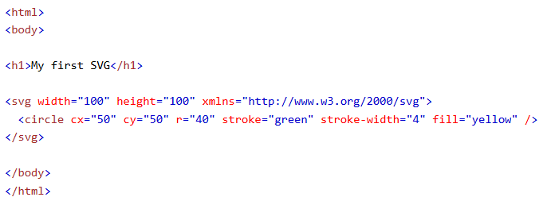
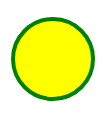
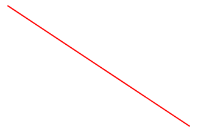
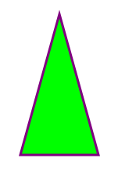

Learn SVG
<svg>
The <svg> tag is used to define vector graphics.
<svg width="100" height="100"></svg>Example:
<circle>
The <circle> tag is used to draw circles.
<svg><circle cx="50" cy="50" r="40" stroke="green" stroke-width="4" fill="yellow"/></svg>Example:
<rect>
The <rect> tag is used to draw rectangles.
<svg><rect width="200" height="100" x="10" y="10" rx="20" ry="20" fill="blue"/></svg>Example:
<line>
The <line> tag is used to draw lines.
<svg><line x1="0" y1="0" x2="300" y2="200" style="stroke:red;stroke-width:2"/></svg>Example:
<polygon>
The <polygon> tag is used to draw polygons.
<svg><polygon points="100,10 150,190 50,190" style="fill:lime;stroke:purple;stroke-width:3"/></svg>Example:
